This preloader is too good
This preloader is too good

Электромагнитные колебания – периодически изменяющиеся во времени взаимосвязанные электрическое и магнитное поля. При этом имеют место периодические изменения (колебания) напряженности электрического и индукции магнитного полей и периодическое взаимопревращение энергии электрического поля в энергию магнитного поля.
Электромагнитные колебания возникают в электрическом колебательном контуре, схема которого приведена на рис. 1. Контур состоит из конденсатора емкостью C, катушки индуктивности L и резистора сопротивлением R.
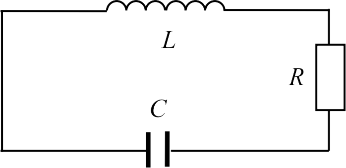Если конденсатор зарядить от источника постоянного электрического напряжения, то он начнет разряжаться через катушку индуктивности и в контуре появится ток. В катушке при прохождении нарастающего тока возникнет ЭДС самоиндукции, препятствующая изменению тока в соответствии с правилом Ленца. Поэтому ток нарастает постепенно до тех пор, пока вся энергия электрического поля конденсатора не перейдет в энергию магнитного поля катушки. В этот момент заряд на обкладках конденсатора станет равным нулю, а сила тока в катушке индуктивности достигнет максимального значения. Далее ток, не изменяя направления, начнет убывать, но из-за электромагнитной индукции сила тока будет уменьшаться не мгновенно, а постепенно. При этом конденсатор будет перезаряжаться и возникающее в цепи электрическое поле будет тормозить движение зарядов, что постепенно приведет к уменьшению силы тока до нуля. В этот момент заряд на обкладках конденсатора и энергия электрического поля достигнут максимальных значений, а энергия магнитного поля вновь станет равной нулю. К этому времени завершается первый полупериод процесса в колебательном контуре. Во время второго полупериода ток в контуре течет в обратном направлении, постепенно увеличивая энергию магнитного поля, и после того, как сила тока достигнет максимума, начнется новая перезарядка конденсатора.
Заряд q и напряжение U на обкладках конденсатора, а также сила тока I в контуре изменяются во времени по периодическому закону. Если бы сопротивление контура (включая сопротивление провода обмотки катушки и подводящих проводов) было равно нулю (R = 0), то колебания в контуре могли бы продолжаться неограниченно долго, что соответствует собственным электромагнитным колебаниям без потерь энергии. Соотношение между ЭДС самоиндукции, возникающей в катушке индуктивности, и напряжением на обкладках конденсатора в таком идеальном контуре
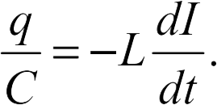С учетом определения силы тока получим дифференциальное уравнение собственных незатухающих электромагнитных колебаний:
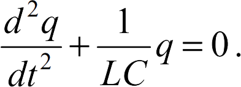Введя обозначение
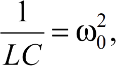выражение (2) сведем к виду
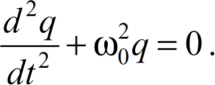Решением дифференциального уравнения (4) является выражение

где q0 – амплитудное значение заряда на обкладках конденсатора; ω0 – циклическая частота собственных электромагнитных колебаний в контуре (собственная частота); φ0 – начальная фаза колебаний.
Уравнение (5) – уравнение собственных электромагнитных колебаний, описывает зависимость заряда на конденсаторе от времени.
Собственная циклическая частота электромагнитных колебаний (из (3))
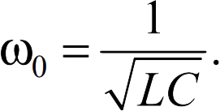Собственная частота колебаний
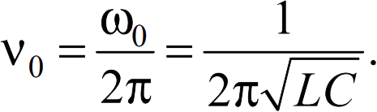Период собственных незатухающих колебаний в контуре
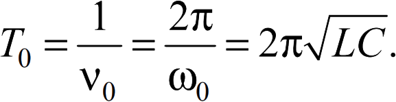Энергия электромагнитных колебаний в колебательном контуре периодически с частотой вдвое большей частоты самих колебаний перераспределяется между электрическим и магнитным полями. Полная энергия колебаний, равная сумме энергий электрического и магнитного полей в каждый момент времени, равна максимальному значению энергии электрического поля в конденсаторе либо максимальному значению магнитного поля в катушке:
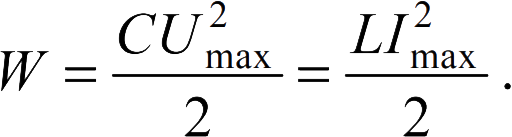Реальный колебательный контур всегда обладает сопротивлением электрическому току. В контуре, имеющем сопротивление R, энергия, запасенная в колебательной системе, постепенно расходуется на выделение теплоты (закон Джоуля – Ленца) и колебания затухают. По закону Ома сила тока в таком контуре (рис. 1)
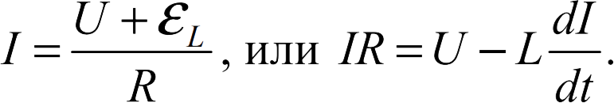С учетом определения силы тока
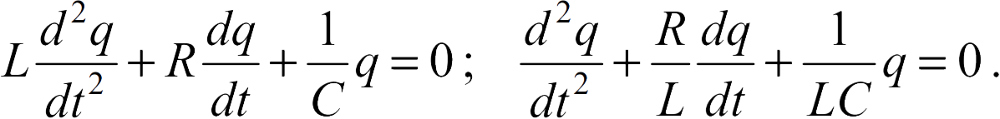Введя обозначение
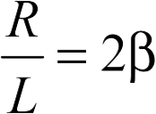и используя (3), окончательно запишем дифференциальное уравнение собственных затухающих электромагнитных колебаний:
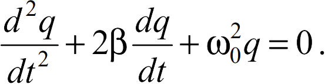Решением дифференциального уравнения (13) является выражение, отображающее зависимость заряда на обкладках конденсатора в реальном колебательном контуре от времени (уравнение затухающих электромагнитных колебаний):
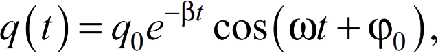где q0 – начальное амплитудное значение заряда на обкладках конденсатора; β – коэффициент затухания; ω – циклическая частота затухающих электромагнитных колебаний в контуре; φ0 – начальная фаза колебаний.
Так как заряд q на обкладках конденсатора прямо пропорционален напряжению U между ними (q = CU), то зависимость напряжения от времени при затухающих колебаниях следующая:

где U0 – начальное напряжение между обкладками конденсатора.
При затухающих колебаниях амплитудные значения заряда и напряжения на конденсаторе уменьшаются со временем экспоненциально. В частности

Характер зависимости напряжения от времени графически изображен на рис. 2.
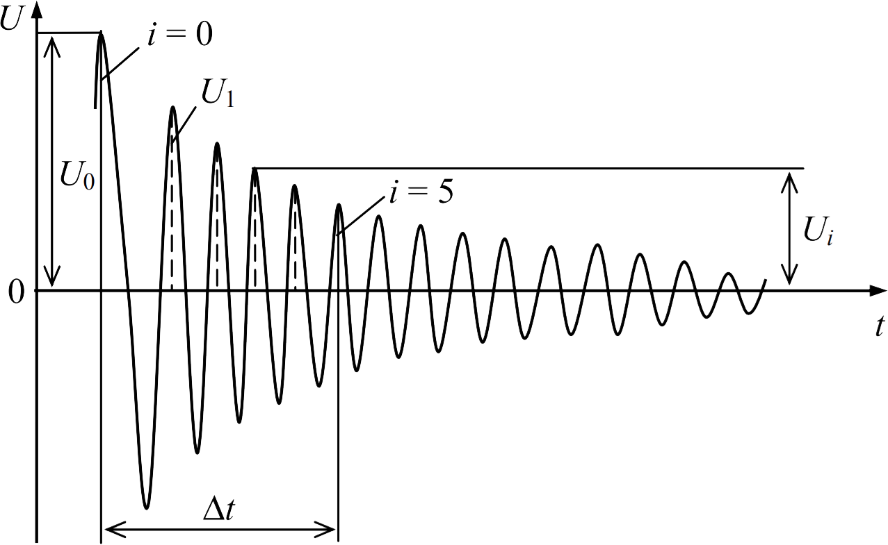Циклическая частота ω затухающих колебаний отличается от собственной частоты ω0 незатухающих колебаний:
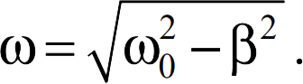Соответственно период затухающих колебаний
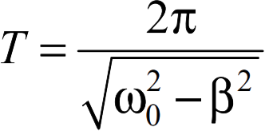несколько больше периода T0 собственных незатухающих колебаний в контуре
Коэффициент затухания колебаний
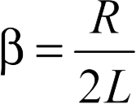возрастает с увеличением сопротивления R цепи. Если сопротивление контура так велико, что
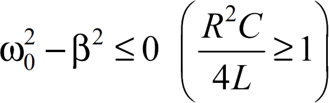то процесс изменения заряда в цепи уже не будет колебательным, а станет апериодическим. Критическое значение сопротивления контура, при котором колебательный процесс становится апериодическим
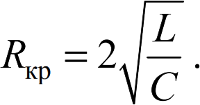Затухание колебаний характеризуется логарифмическим декрементом затухания δ, равным натуральному логарифму отношения амплитуд колебаний, отличающихся по времени измерения на период. В частности для амплитуд напряжений
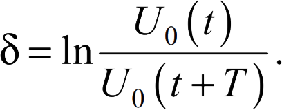Выражая амплитуды по формуле (16), получим соотношение между логарифмическим декрементом затухания δ и коэффициентом затухания β:
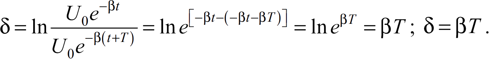Время τ, по истечении которого амплитуда колебаний убывает в е раз (е – основание натурального логарифма, е ≈ 2,71826), называется временем затухания:
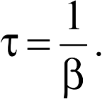За время τ в контуре совершается N полных колебаний:
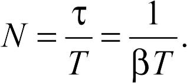Таким образом, логарифмический декремент затухания δ связан с числом колебаний N, приводящим к уменьшению амплитуды колебаний в е раз, соотношением δ = 1 / N.
Подставляя в формулу (22) выражения (18) и (19) и учитывая (6), получим
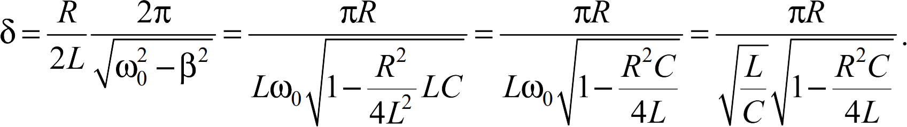Если затухание невелико, то декремент затухания зависит от параметров колебательного контура следующим образом:
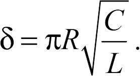Важнейшей характеристикой колебательного контура является величина, обратно пропорциональная логарифмическому декременту, называемая добротностью:
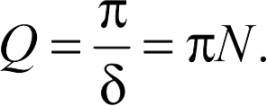Чем выше добротность, тем большее число колебаний N успеет произойти в контуре прежде, чем амплитуда колебаний уменьшится в е раз.
Из (24) и (25) следует зависимость добротности от параметров колебательного контура при слабом затухании:
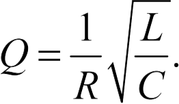Чем выше добротность контура, тем меньше относительные потери энергии при затухающих колебаниях.